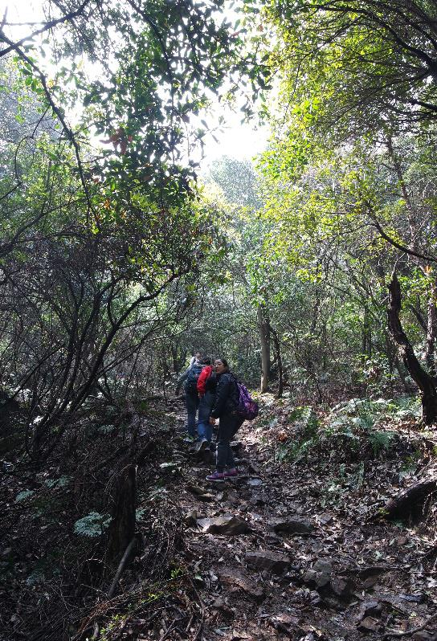
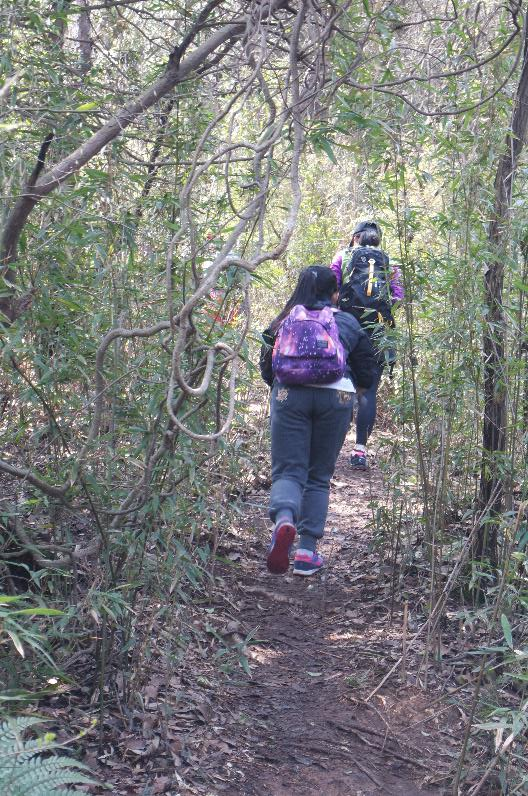

发信人: Nweapon (革命), 信区: outdoor
标 题: 徒步游记_20150328无锡军嶂古道
发信站: 饮水思源 (2015年04月07日13:50:00 星期二)
2015年3月28日早晨七点，在闵行交大新体的停车场，我们的队员在紧张有序地集结、签到
、登车。七点出发，这意味着所有人员六点甚至更早起床，这是给队员们第一个小小的挑
战。然而，让我们触动的是，徐汇交大校区的四位女生早上四点起床，打的赶到了闵行校
区；华师的两个姐妹，早早地骑车来到了集合地点；校外的队员也是按照自己的计划向徒
步的起点赶去。所有队员都在用行动表现着自己的期待，积蓄着力量！
经过两个多小时的车程，革命队伍的全体成员在上午十点到达了此次徒步的起点——无锡
宝界山林公园。十点20分，“革命队伍”66名队员，迈出了穿越军嶂古道的第一步！
screen.width - 200){this.width = screen.width - 200}">
走进山中，漫步于竹林，远望鸟儿枝间嬉戏，侧耳聆听泉水叮咚，就是这样一座令人神往
的大山，就是这样一副如仙如梦的画面。我们穿梭于其中，队员们体力充沛，不断地欢颜
笑语，仿佛间，大家成了山的一部分，忘记了忧愁，忘记了烦恼。
美女们一次次优雅的pose，被效果不一的相机一张张地收录；
帅哥们一个个稳健的步伐，被散落满地的树叶一刻刻地收容；
领队们一段段风趣的对话，被给力的对讲机一声声地传达。
screen.width - 200){this.width = screen.width - 200}">
screen.width - 200){this.width = screen.width - 200}">
从大山头走过山谷，迂回到大浮南村，队员们体力有了一些消耗。四周的景色已不再是美
轮美奂，视野也不再是敞阔无比，转而我们仿佛身陷丛林腹地，林高丛密，曲径通幽，道
路坎坷，树枝挡道，美丽的古道正式开始了对队员们的考验。茂密的丛林曲曲折折，队伍
的最前方是“革命”老师从容地带队，队伍的中段是“叶子”带队紧紧地跟随，队伍的最
后是“斌子”负责地收尾。三个领队互相用着对讲机，时刻了解着彼此队伍段的情况；队
员们都开着行者路书，不断更行着自己的位置。路上岔路接二连三，途中多古道，我们也
循着红丝带和标牌前进。虽然丛林密布，但是有“革命”老师的带队，队员们心里都无比
的踏实。
 screen.width - 200){this.width = screen.width - 200}">
 screen.width - 200){this.width = screen.width - 200}">
从大浮南村行进至卧龙潭，再绕行橡胶二厂旧址翻山横切到盘龙路垭口。这样一路的徒步
，大家都疲惫起来，有些第一次徒步的队员脚底开始犯疼，膝盖有了酸痛，大家休息的次
数也增加了起来。有徒步经验的老队员给新队员细心地讲解着登山杖的使用，指导新队员
如何保护自己的膝盖。大家互相帮助着，相互鼓励着，女队员们更是相互搀扶着，脸上写
着倔强和不屈，身旁弥漫着“巾帼不让须眉”的气氛。
柳暗花明又一村，经过这一段艰难的路途之后，大家迎来又一片让人赞美的景色：一片片
的梨花、油菜花、樱花。
成片的梨花散发着“千树万树梨花开”的淡雅气息，一朵朵的油菜花描绘着春天里黄色的
海洋，一棵棵樱花树点缀着每个人内心对美丽的憧憬。仿佛之前的劳累被抛到了脑后，大
家相互合影，似乎想把这最美丽的景色永远留在身边。
screen.width - 200){this.width = screen.width - 200}">
screen.width - 200){this.width = screen.width - 200}">
然而，这美丽的风景就像是暴风雨前的宁静，队员们在短暂的休整之后，要进行最后的冲
刺：登军嶂主峰，下到龙寺，穿越生态园，然后沿山梁曲折穿越到目的地——军嶂村。
军嶂主峰相对高差200米，攀登的道路是一条仅一人可通过的小路，两旁的林子高密，路况
差，坡度约50度。大家知道，这是最艰难的时刻，所有人坚持着！队员想放弃了，“革命
”老师积极鼓励着；队员走不动了，前面的拉着后面的推着；队员被树枝划破了，领队提
供着医疗服务；队员们时不时地驻足，舒展一下腰，时不时地仰天长啸。
即使满脸汗水，我们都不曾止步；
即使汗流浃背，我们都不曾放弃；
即使脚疼膝酸，我们都不曾松懈；
因为我们知道，我们是“革命队伍”，我们要“不抛弃，不放弃”！
screen.width - 200){this.width = screen.width - 200}">
screen.width - 200){this.width = screen.width - 200}">
screen.width - 200){this.width = screen.width - 200}">
screen.width - 200){this.width = screen.width - 200}">
下午四点四十五分，66名队员全部完成了的徒步，纵然有人想要放弃，纵然有人无法坚持
，终点依旧被我们踩在了脚下。第一次徒步的女队员王学娇说“报名的时候还在想20Km的
山路，肯定走不下来，估计得累疯了，然而没想到就这样到了终点。我发现自己就这样喜
欢上了徒步，非常感谢革命队伍提供这次机会，希望能有下一次的相聚”。
我想，所有队员都是累的，却都觉得是值得的；我想所有队员都是兴奋的，对我们的“革
命”老师是感谢的，对“革命队伍”是珍惜的。大家最后都呐喊着、欢呼着、期待着再一
次的“革命队伍”！
返程的车上是安静的，领队依旧进行着最后的签到、统计，队员们都累得睡着了、、、、
、、
这是2015年“革命队伍”的第一走，你明白的，这仅仅是“革命队伍”的一个开始、、、
、、、
记住我们的口号“不抛弃，不放弃”！
编者：斌子
2015年3月29日
--
┏━━┓
┃命革┃
┃革命┃
┗━━┛
※ 来源:·饮水思源 bbs.sjtu.edu.cn·[FROM: 202.120.53.49]
|